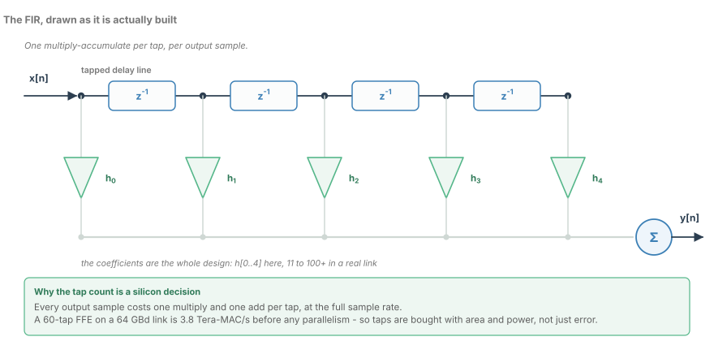
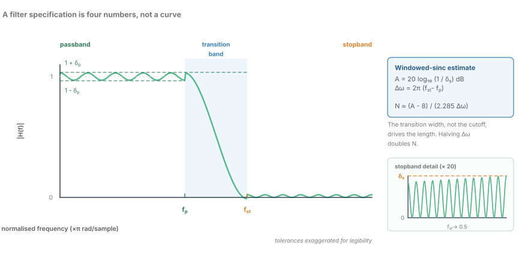
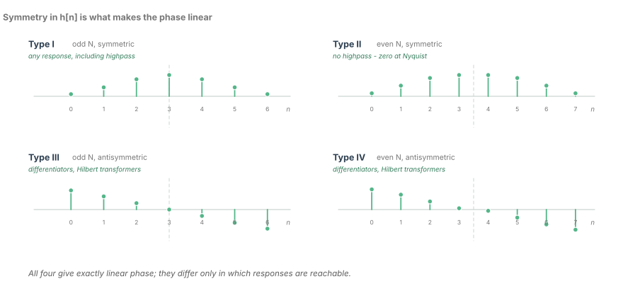
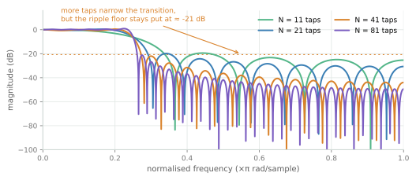
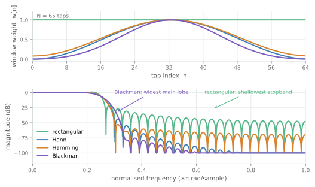
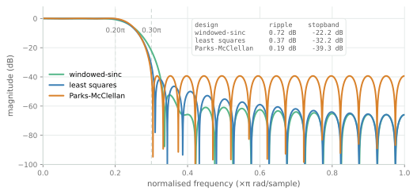
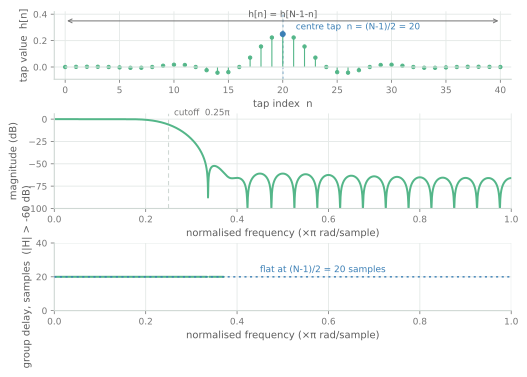

FIR Filter Design
Windowed-sinc, least squares and Parks-McClellan, with the linear-phase condition that makes FIRs the default in hardware.
Almost every filter you will ever ship is a finite impulse response filter, and the reason has very little to do with the magnitude response. It is because a FIR has no memory of its own output. You can stop it, restart it, pipeline it to your heart's content, and it will never ring forever, never drift into a limit cycle, and never surprise you at a corner it was not simulated at.
That freedom is not free. The price of a FIR is tapped delay line length, and the length is decided by the transition band you are willing to pay for.
The structure, and what it costs
A FIR is an inner product between the last $N$ input samples and a vector of coefficients:

There is nothing hidden in that picture. Every tap is a register, a multiplier, and an adder, and every output sample touches all of them.
That is the number to carry around. A 60-tap equaliser running at the full line rate of a 64 GBd optical link needs nearly four trillion multiply-accumulates every second, before any parallelism. Real silicon runs those multipliers at a few hundred megahertz to a couple of gigahertz, so three point eight Tera-MAC/s is somewhere between a thousand and ten thousand physical multipliers: a floor plan, a power budget, and a package thermal problem in one line of algebra.
This is why the tap count is a silicon decision rather than a signal-processing one. You choose the tap count first — from area, clock rate and power — and then you choose the design method that extracts the most stopband rejection from the taps you were given. The rest of this chapter is about that second choice.
If the words "specification" and "transition band" are not yet concrete, the next figure fixes that. A filter specification is four numbers, and one of them is expensive.

Why the FIR is the default
A FIR is the only filter you can design without asking whether it is stable.
There is no feedback. The output depends on inputs only. Every pole sits at the origin — the transfer function is a polynomial in $z^{-1}$ divided by nothing — so there is no pole placement to check, no gain margin, and no coefficient truncation that can quietly move a pole outside the unit circle.
There are no limit cycles. An IIR filter rounding to finite precision can sustain a small self-generated oscillation forever, because its own output feeds its own input. A FIR cannot: once you stop feeding it, its output is zero after $N-1$ samples. That is worth a great deal when a stuck oscillation looks exactly like a signal to the block downstream.
It pipelines trivially. There is no loop to close, so you can insert registers anywhere. Retiming is legal. A symmetric FIR even lets you add the mirrored tap pairs before multiplying, which turns $N$ multiplications into $N/2$ multiplications plus $N/2$ additions. When a multiplier costs four times an adder, that trade is not a rounding error.
And with symmetric coefficients it has exactly linear phase. That is not an approximation or a "good enough" property. It is exact, it is free, and the next section is about what it buys.
The four linear-phase types
Symmetry in the impulse response is what buys linear phase, and the symmetry comes in four flavours. The distinction matters because the symmetry constrains which responses are reachable at all.

| Type | $N$ | Symmetry | Group delay | What it is for |
|---|---|---|---|---|
| I | odd | symmetric | integer samples | any response, including highpass |
| II | even | symmetric | half-integer samples | lowpass, bandpass — never highpass |
| III | odd | antisymmetric | integer samples | differentiators, Hilbert transformers |
| IV | even | antisymmetric | half-integer samples | differentiators, Hilbert transformers |
Why Type II cannot be a highpass
Evaluate any even-length symmetric FIR at the folding frequency, $\omega = \pi$, which is Nyquist:
That last equality is not a design constraint you impose. It is an identity that falls out of the symmetry. Write the sum as pairs, $h[0] - h[1] + h[2] - \dots$: for even $N$, symmetry pairs tap $n$ with tap $N-1-n$, and because $N-1$ is odd the two members of every pair carry opposite signs of $(-1)^n$. Since the taps are equal, each pair cancels exactly. There is nothing left.
So a Type II filter has a zero response at Nyquist for every coefficient vector you could ever load into it, and no amount of clever coefficient design removes it. Ask Parks–McClellan for an even-length highpass and it will hand you something that is 0 dB in the passband with a hole punched out at exactly the frequency a highpass exists to pass.
One related fact is worth filing next to it: Type III is forced to zero at both $\omega = 0$ and $\omega = \pi$, because the antisymmetry makes the DC sum vanish too. That double zero is what makes Type III a good differentiator, and why it is useless as a general-purpose lowpass.
Cutting the ideal sinc short
The ideal lowpass filter has a rectangular frequency response, and its impulse response is a sinc:
It is infinite in both directions and therefore non-causal. Every real design is that response multiplied by a finite-length window — in the simplest case a rectangular one:
Multiplication in the time domain is convolution in the frequency domain. You asked for a brick wall; what you get is a brick wall convolved with the transform of the rectangle, which is a sinc with sidelobes that decay painfully slowly. This is the Gibbs phenomenon, the central fact of the chapter.

Look at what happens as the tap count grows. At 11 taps the first −40 dB point sits at $0.363\pi$; at 81 taps it has moved to $0.265\pi$, so the transition band has narrowed by a factor of about four. That is the part everyone expects. Now look at the ripple: the peak stopband lobe measures −19.4 dB at 11 taps, −22.0 dB at 41 taps and −21.2 dB at 81 taps. It does not decay, and it does not even monotonically improve.
The reason generalises. The ripple is not caused by the truncation being too short; it is caused by the truncation being abrupt. A hard edge in the time domain is a slow, oscillating tail in the frequency domain. To bring the sidelobes down you must smooth the edge — which is exactly what a window is.
Windows: buying stopband with transition width
A window tapers the truncated sinc to zero at both ends. You trade main-lobe width for sidelobe height, and the four classic windows walk that trade in a well-understood order.

| Window | First sidelobe | Main lobe (relative) | Character |
|---|---|---|---|
| Rectangular | −13 dB | 1.0 | narrowest transition, useless stopband |
| Hann | −31 dB | 2.0 | good general purpose, rolls off fast |
| Hamming | −43 dB | 2.0 | the default for a reason |
| Blackman | −58 dB | 3.0 | deepest stopband, widest transition |
Those sidelobe numbers are the textbook ones, and they are the right ones to carry in your head. The figure shows them in situ: at 65 taps with a cutoff at $0.25\pi$, the worst stopband lobe above the cutoff measures roughly −21 dB for a rectangular window, −44 dB for Hann, −53 dB for Hamming and −75 dB for Blackman. Blackman reaches −40 dB at $0.313\pi$, where the rectangular window was already past −40 dB by $0.269\pi$. That difference, about 10% of Nyquist, is what you bought the stopband with.
My opinion on the choice: Hamming is the right default, and people reach for Blackman far too often. Hamming gives you the 43 dB that most links actually need, at the same main-lobe width as Hann. Blackman buys another 15 dB of stopband at the cost of a transition band 40% wider — which, as the design equation shows, is 40% more multipliers.
The design equation
For a windowed-sinc design there is a closed-form estimate for the length, accurate enough to size a filter at a whiteboard:
Work an example. Suppose you need 50 dB of stopband attenuation with a transition band from $0.20\pi$ to $0.40\pi$, so $\Delta\omega = 0.2\pi$:
Now ask for 60 dB over the same band. That is 36 taps — the attenuation change is cheap. The band edge is not. Hold 60 dB and halve $\Delta\omega$ to $0.10\pi$ and the estimate jumps to 72 taps; quarter it and you are at 145 taps.
The transition width, not the cutoff, drives the length. This is the single most useful thing in the chapter for talking to system engineers. Moving a cutoff frequency costs you nothing. Narrowing a transition band costs you taps linearly in the reciprocal — halve $\Delta\omega$, double $N$. If a link budget says the equaliser needs to start rolling off 2 GHz earlier, the right question is not "can the filter do it" but "how many multipliers did you just ask for, and where do they go".
Spending the taps better: least squares and Parks–McClellan
The windowed-sinc method is a good design technique wrapped around a bad design objective. It starts from the ideal brick wall and then apologises for the truncation. The optimal methods do the opposite: they pick the coefficients that minimise an explicit error criterion over the bands you care about.

Here is that difference measured, for a 41-tap design with $f_p = 0.20\pi$ and $f_{st} = 0.30\pi$:
| Design | Passband ripple | Worst stopband |
|---|---|---|
| Windowed-sinc, Hamming | 0.72 dB | −22.2 dB |
Least squares (firls) | 0.37 dB | −32.2 dB |
Parks–McClellan (remez) | 0.19 dB | −39.3 dB |
Seventeen decibels, at identical length and identical silicon. That is not a refinement; it is the difference between a working equaliser and one that is 17 dB short.
Why equiripple wins. A windowed design concentrates its error in the first sidelobe near the band edge and lets it decay from there. Parks–McClellan distributes the error equally across the whole stopband, so every ripple lobe touches the same tolerance. That is optimal in the minimax sense: for a given $N$ and transition width, no other linear-phase FIR has a smaller maximum error. Least squares minimises total squared error instead of the peak, which spreads the error more smoothly but lets the worst lobe climb a few decibels higher. If your specification is a max-stopband number — and it almost always is — remez is the right answer.
The cost, honestly stated. Parks–McClellan is an iterative exchange algorithm, and its convergence is not a patient friend. You must name the band edges and weights up front, and inconsistent weights produce a filter with a wild spike. Its coefficients are also less structured: windowed and least-squares designs often land on coefficients with symmetry or sparsity you can exploit in the datapath, while remez coefficients are famously irregular. And it does not degrade gracefully — hand it a Type II highpass and it returns something that satisfies the band list while violating what you actually wanted.
My judgement: run remez once, during architecture definition, purely to learn the true N-versus-attenuation curve for your specification. Then decide whether the datapath can afford irregular coefficients, or whether you will build the filter with a window instead and accept the decibels you lose.
Group delay, which is latency
A symmetric FIR of length $N$ has phase that is exactly linear in frequency:
Every frequency component is delayed by exactly the same amount. Nothing smears.

For a 41-tap filter the group delay is 20 samples. At the 128 GSa/s front end of a 64 GBd link a symbol is 15.6 ps, so that delay is 156 ps — ten whole symbols — and still nowhere near the forward path's real budget, which is set by FEC frames and link turn-around, not by one filter. So why care? Because latency is only free when it is not inside a loop, and there are three places it is not free:
- Latency in a feedback path is a stability constraint. A decision-feedback equaliser's feedback filter must produce its correction within a symbol period, and any delay in that loop eats the timing margin you have left. Twenty samples at 128 GSa/s costs two thirds of a symbol period.
- Latency in an adaptation loop sets how fast you can adapt. Coefficient update loops measure an error, compute a gradient and apply it. Every sample of delay in that path reduces the loop's phase margin.
- Latency accumulates. Twenty samples here, thirty there, a FIFO for clock domain crossing: at some point you have a round-trip budget for the link's own control protocol, and the filters are a visible line item in it.
The counter-intuitive part is that a symmetric FIR's delay is fixed by its length, not by its frequency response or its stopband depth. You cannot get a 41-tap filter with five samples of group delay. If your loop budget is five samples, you need an 11-tap filter, and you accept the transition band that comes with it.
What to carry forward
- A FIR is one multiply-accumulate per tap per sample. Sixty taps at 64 GBd is 3.84 Tera-MAC/s, and that number is an area and power decision before it is a signal-processing one.
- No feedback means no stability question, no limit cycles, trivial pipelining, and — with symmetric taps — exactly linear phase.
- The four types differ in reachable responses, not in linearity. Type II cannot be a highpass, because its symmetry forces $H(\pi) = 0$ identically.
- Truncating the ideal sinc narrows the transition band as $N$ grows and leaves the ~9% Gibbs overshoot exactly where it was. Ripple is bought with a window, not with taps.
- The transition width drives the length: $N \approx (A - 8)/(2.285\,\Delta\omega)$, and halving $\Delta\omega$ doubles $N$. Changing a cutoff is free; narrowing a transition band is not.
- Equiripple design is worth 10 to 17 dB over a windowed-sinc at the same tap count. That is usually the whole specification.
- Symmetric taps give exactly $(N-1)/2$ samples of group delay, which is free in the data path and expensive inside a feedback loop.
The next chapter takes the other branch of the fork. Feedback is what a FIR refuses to have and what makes it safe — and it is also the only way to get a sharp transition band out of a handful of coefficients. IIR design is the art of taking that deal without the filter oscillating.